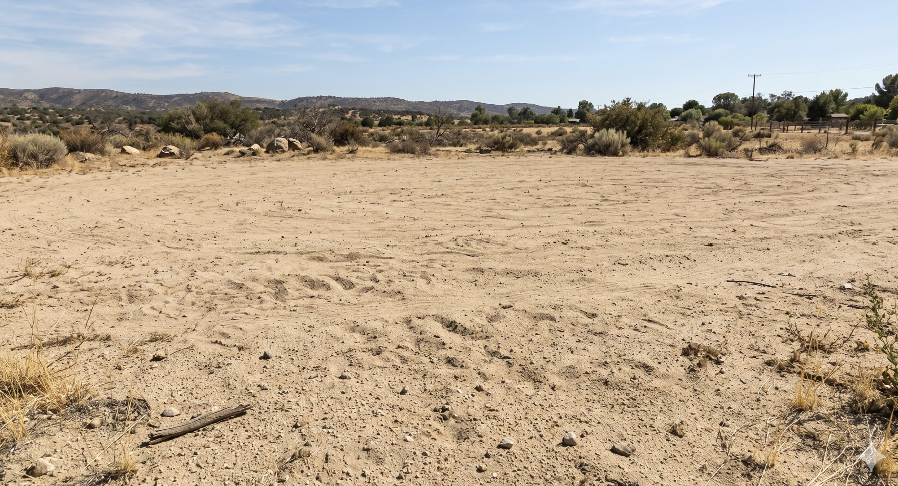
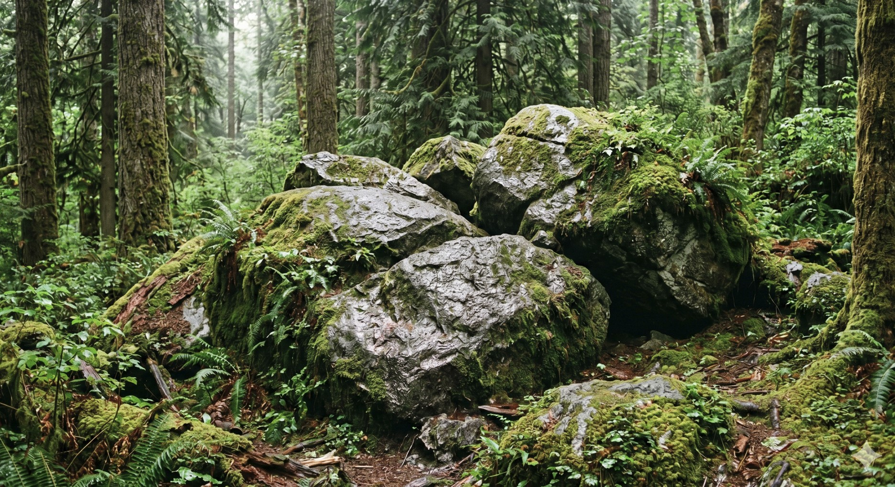
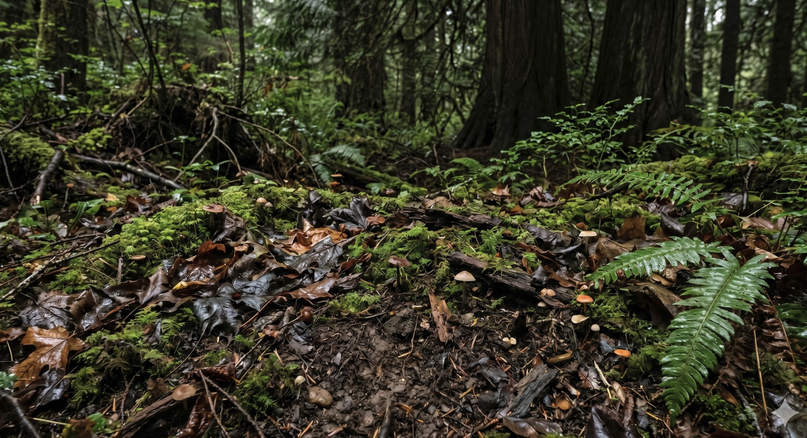
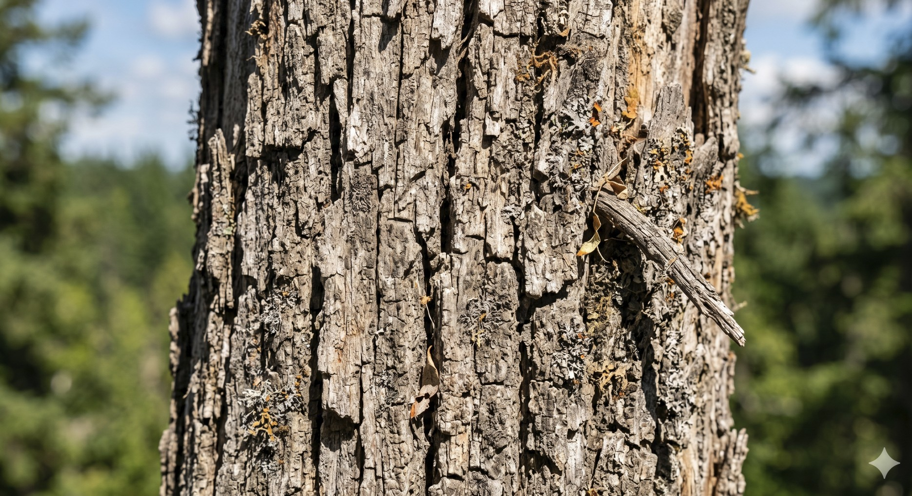
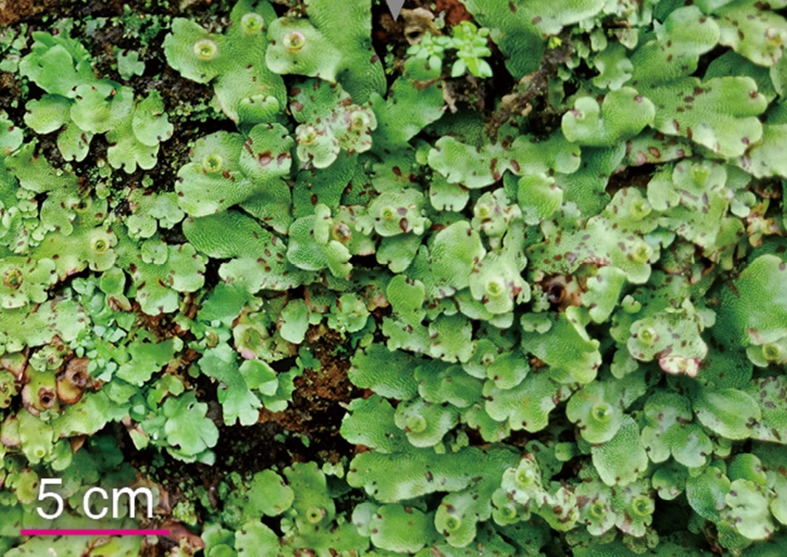
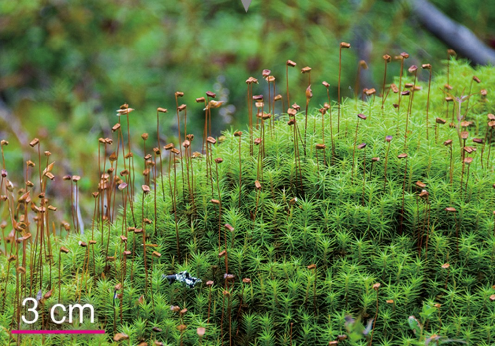
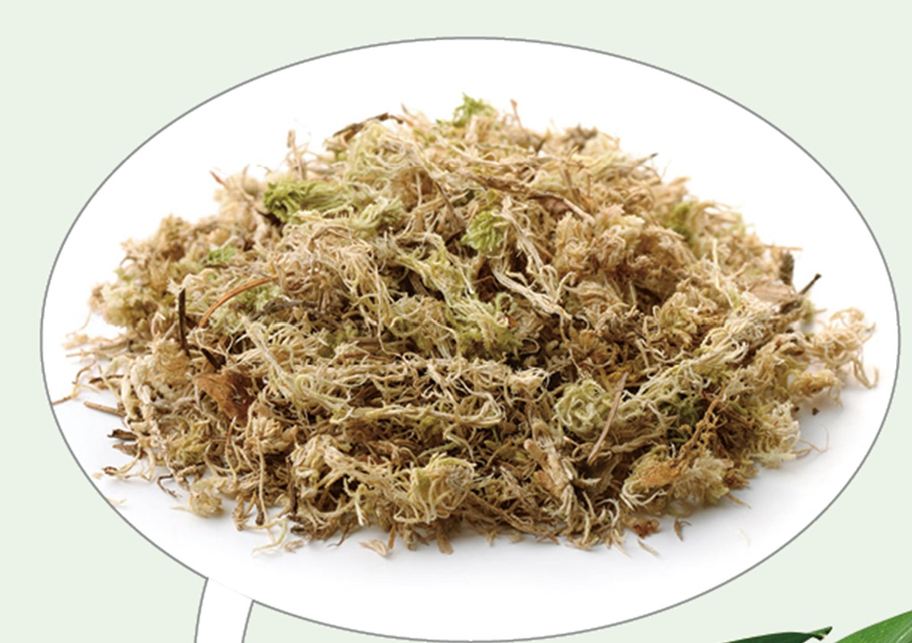
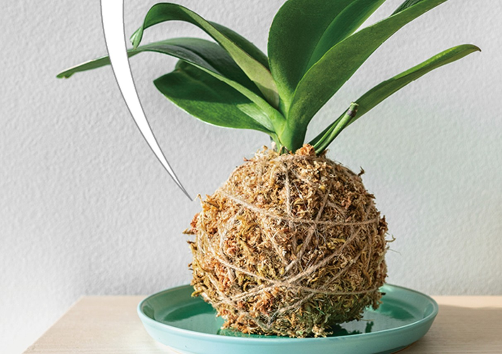

蘚苔植物是最早登陸陸地的植物之一。它們已開始適應陸地生活， 但仍保留了許多早期植物的特徵。
這一頁你會認識蘚苔植物的生活環境、 維管束、外形特徵，以及為什麼它們像是「剛登陸陸地的早期版本」。
蘚苔植物通常喜歡 潮溼環境，常見於土壤、岩石或樹幹表面。 其中不同種類也會有比較常見的生長場景。
互動任務：依照特徵描述，選出最符合的生長場景
請注意，這裡要選的是「最符合」的場景。

日照強，水分容易散失。

表面陰濕，常見平鋪附著。

地面潮溼，適合較直立的小型蘚苔植物。

較容易乾燥，不是最適合的生長位置。
蘚苔植物沒有維管束， 所以水分運輸速度較慢；而蕨類植物有維管束， 水分可以更快送到較高的位置。
互動任務：先按下按鈕觀察，再回答問題
觀察哪一邊的水上升比較快、上升得比較高。
水分慢慢上升，停在較低位置
水分快速上升，停在較高位置
常見的蘚苔植物包括地錢、 土馬騌和 水苔。 它們的外形與用途各不相同。
互動任務：點卡片翻面，讀完特徵後回答問題
先把三張卡片都翻開，再選出最符合敘述的植物。

點一下翻面
外形扁平，常平鋪在地面或岩石表面。

點一下翻面
外形較直立，常見於陰濕地面。

點一下翻面
保水性佳，常作為園藝材料。
有些蘚苔植物除了能在自然環境中生長，也有生活上的應用。 其中水苔因為保水性佳， 常被用在園藝與造景中。

情境任務
小明想做瓶中景觀，想選一種保水效果好的植物材料，應該選哪一個？
蘚苔植物的構造和它們的生存方式有密切關係。 了解這些特徵，就能知道它們為什麼適合生活在潮溼環境中。
互動任務：幫蘚苔植物找到正確原因
請替每個特徵選出最合適的解釋。
現在你已經認識蘚苔植物的環境、構造與用途， 來幫它完成一張簡單的身分證吧！
互動任務：完成蘚苔植物身分證
每一欄都要選出正確答案。